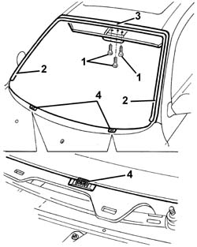
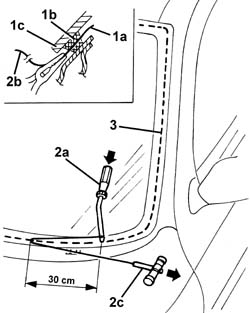
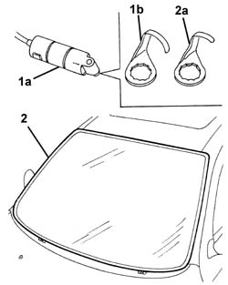
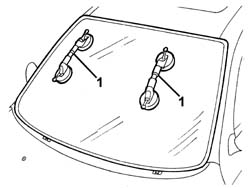
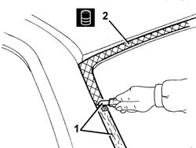
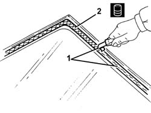
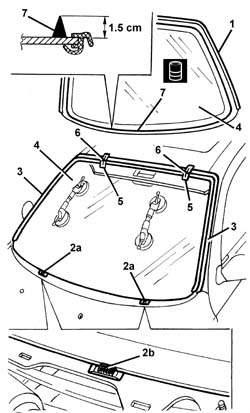
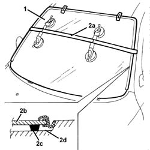

7035A14 (Bonded type) windscreen GLASS - R.R. - Includes. cleaning edges of glass and housing in bodyshell
- Path
- Procedures > 70 FITTINGS > 7035 BODYSHELL WINDOWS > 7035A windscreen > 7035A14 (Bonded type) windscreen GLASS - R.R. - Includes. cleaning edges of glass and housing in bodyshell
- Kind
- repair procedure (removal / refitting; the operation number is the code)
- Applies to
- all engines; all production periods
- Interactive page
- https://sloeber94.github.io/elrnDB-a147/en/#/3025783
Applies to: all engines; all production periods
 Removing
Removing
 Refitting
Refitting5580E22 Anti-theft device VOLUMETRIC SENSORS - R.R. after checking electrical circuit
7040E50 front modular courtesy light unit - r+r
7065C33 sun blind with courtesy mirror and courtesy light one lh or rh r r (left and right sides)
7065C30 interior l/h or r/h grab handle (one) - r+r (front)
7040H30 front pillar trim - r r (left and right sides)
Remove the rain sensor.
7065C68 rear view mirror - r+r
7030B34 sliding roof compartment decorative seal - r+r
5050B34 windscreen wiper arm/s complete with blade - r+r
7055A18 Windscreen base TRIM - R.R.
1. Undo the front bolts securing the roof trim.
Protect the facia and wings using covers.
2. Remove the perimetral seal of the windscreen.
3. Apply a double layer of adhesive tape to protect the edges of the bodywork along the side and top of the windscreen.
4. Fully lower the pegs on the windscreen retaining blocks.

Applies to: all engines; all production periods
The bead of sealant for the windscreen can be cut using either harmonic wire or the vibrating knife; both methods are described below.
To cut the bead using harmonic wire, proceed as follows.
1. Cut a section of harmonic wire about 50 cm long, then, using pliers, insert one end (1a) of the harmonic wire through the bead of sealant (1b) which secures the windscreen (1c).
2. Secure the end (1b) of the wire to the appropriate retaining tool (2a) located inside the car. Secure the end (2b) of the wire to the traction handle (2c) located outside the car.
3. The operator inside the car must keep the end of the tool (2a) on the bead of sealant (3) at about 30 cm from the point of passage of the wire. The other operator outside the car must pull the handle (2c), following the outline of the windscreen and cut the bead of sealant (3). Repeat the operation in sections of about 30 cm, until the whole of the bead of sealant (3) is cut.

Applies to: all engines; all production periods
To cut the bead using the vibrating knife, proceed as described below.
1. Use the vibrating knife (1a) with blade (1b) and cut the bead of sealant at the bottom of the windscreen working from outside the car.
2. Fit the blade (2a) and cut the bead of sealant on the other sides of the windscreen, working from outside the car.

Applies to: all engines; all production periods
1. After cutting the whole bead of sealant, fit the suction handles on the windscreen, then with the assistance of a second operator, remove the windscreen and rest it on a supporting stand.

Applies to: all engines; all production periods
Refitting
Removing1. Using a suitable tool, cut and smooth the bead of sealant in the windscreen frame, leaving a thickness of between 0.25 and 1 mm, taking care not to scratch the paintwork. The sealant left in the housing will act as a backing for the new bond.
2. Carefully clean the windscreen seating with compressed air, and thoroughly degrease with heptane. If glueing takes place 60 minutes after cutting and smoothing the bead of sealant, treat the sealant surface with the specific activator and wait 15 minutes before fixing the windscreen.
 | Type | Component | Name | Qty. |
|---|---|---|---|---|
2 | PUR activator | Windscreen glass | - | - |
Touch up the paintwork if necessary.

Applies to: all engines; all production periods
1. Using a suitable tool, cut and smooth the bead of sealant on the windscreen so as reduce its thickness to a minimum. The remaining sealant does not have to be removed completely; take care not to damage the black screen printing around the edge of the window.
2. Carefully clean with compressed air the printed area around the edge of the window and thoroughly degrease with heptane. Check that the window is undamaged. If glueing takes place 60 minutes after cutting and smoothing the bead of sealant, treat the sealant surface with the specific activator and wait 15 minutes before fixing the windscreen.
| Type | Component | Name | Qty. |
|---|---|---|---|---|
2 | PUR activator | WINDSCREEN GLASS | - | - |

Applies to: all engines; all production periods
1. Fit the seal around the perimeter of the windscreen. Use a new seal.
2. Remove the retaining blocks (2a) and make all the pegs (2b) come out, then refit the blocks.
3. Remove the adhesive tape from the edges of the bodywork, along the side and top of the windscreen frame.
4. Test fit the windscreen, centring it perfectly, using the retaining blocks (2a).
5. With the windscreen centred, mark the relative positions of the windscreen and its seating, using strips of adhesive tape.
6. Cut the adhesive tape strips and remove the windscreen.
7. Use an air gun to extrude a bead of sealant arond the edge of the windscreen as evenly as possible.
| Type | Component | Name | Qty. |
|---|---|---|---|---|
7 | Window bonding sealant | WINDSCREEN GLASS | Product n. 71711976 | - |

Applies to: all engines; all production periods
1. With the assistance of a second operator, fit the windscreen in its seating immediately after applying the sealant, and bed it in place.
2. Fit the belt (2a) as shown in the figure and tension it so as to apply even pressure on the whole windscreen, in order to ensure a correct match between the window (2b), sealant (2c) and windscreen frame (2d).

Applies to: all engines; all production periods
Before refitting the external and internal components of the car, check that there are no leaks by conducting a water test.
Fit the roof trim and tighten the front retaining bolts.
7055A18 Windscreen base TRIM - R.R.
5050B34 windscreen wiper arm/s complete with blade - r+r
7030B34 sliding roof compartment decorative seal - r+r
7065C68 rear view mirror - r+r
Fit the rain sensor.
7040H30 front pillar trim - r r (left and right sides)
7065C30 interior l/h or r/h grab handle (one) - r+r (front)
7065C33 sun blind with courtesy mirror and courtesy light one lh or rh r r (left and right sides)
7040E50 front modular courtesy light unit - r+r
5580E22 Anti-theft device VOLUMETRIC SENSORS - R.R. after checking electrical circuit
Topics linked from this page (9)
- 5050B34 windscreen wiper arm/s complete with blade - r+r
- 5580E22 Anti-theft device VOLUMETRIC SENSORS - R.R. after checking electrical circuit
- 7030B34 sliding roof compartment decorative seal - r+r
- 7040E50 front modular courtesy light unit - r+r
- 7040H30 front pillar trim - r r
- 7055A18 Windscreen base TRIM - R.R.
- 7065C30 interior l/h or r/h grab handle (one) - r+r
- 7065C33 sun blind with courtesy mirror and courtesy light one lh or rh r r
- 7065C68 rear view mirror - r+r